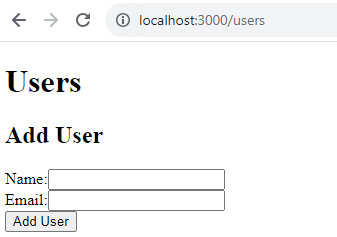
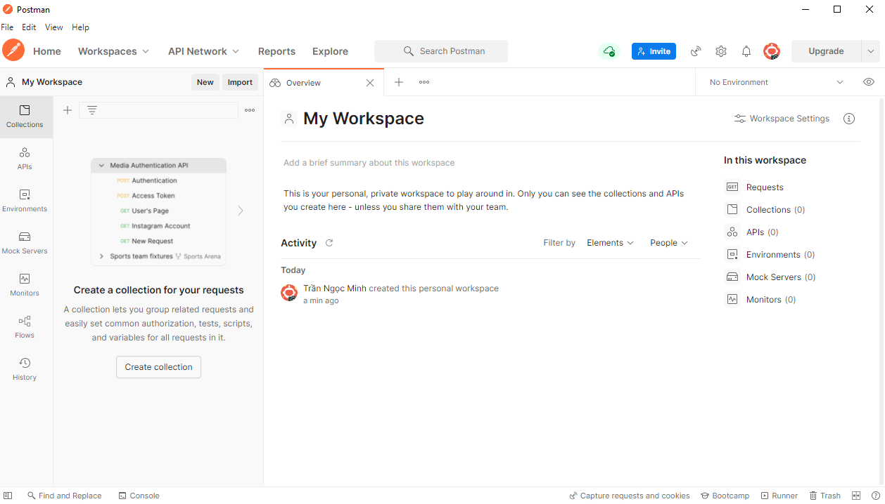

Bài 5: Xây dựng ứng dụng web hướng máy chủ
Nội dung bài học
Xây dựng ứng dụng web dùng Express và MongoDB
Các bước xây dựng ứng dụng
Chúng ta đã tìm hiểu NodeJS, hệ quản trị MongoDB (Bài 3), cách tạo ứng dụng với Express và mô hình MVC (Bài 4). Trong nội dung này, chúng ta sẽ kết hợp tất cả lại với nhau để xây dựng ứng dụng dùng Express, tổ chức dự án theo mô hình MVC và quản lý dữ liệu với MongoDB. Bao gồm các bước cơ bản sau:
Bước 1: Chuẩn bị Môi trường
Trước tiên, bạn cần cài đặt Node.js và MongoDB trên máy tính của mình. Bạn có thể tìm hướng dẫn cài đặt tại các trang chính thức của Node.js và MongoDB.
Bước 2: Tạo Thư mục Dự Án và Cài Đặt Dependencies
- Tạo một thư mục mới cho dự án của bạn.
- Mở Terminal và điều hướng đến thư mục bạn vừa tạo.
- Chạy npm init để tạo tập tin package.json và nhập thông tin cho dự án của bạn.
- Cài đặt các dependency (Express, MongoDB, các template engine cần thiết).
Bước 3: Thiết Lập Cấu trúc Dự Án MVC
Tạo các thư mục cho mô hình MVC của bạn, ví dụ: models, views, controllers. Đây là nơi bạn sẽ lưu trữ các mô hình, các trang giao diện và các logic điều khiển.
Bước 4: Thiết Lập Kết Nối với MongoDB
Trong tập tin app.js hoặc server.js, kết nối với MongoDB sử dụng MongoDB Driver:
Bước 5: Định nghĩa Routes và Controllers
Trong thư mục controllers, tạo các tập tin điều khiển (ví dụ: userController.js) để xử lý logic và trong thư mục routes, tạo các tập tin định tuyến (ví dụ: userRoutes.js) để xác định các tuyến dẫn của ứng dụng.
Bước 6: Tạo giao diện trang dùng template engine (Pug, Handlebars,...)
Trong thư mục views, tạo các tập tin Pug hay Handlebars,... để hiển thị nội dung trang web của bạn.
Bước 7: Thiết Lập Express App
Trong tập tin server.js hoặc app.js, thiết lập Express app và định tuyến:
Bước 8: Bắt Đầu Phát triển
Bắt đầu viết các model, routes, controllers và templates theo nhu cầu của dự án của bạn.
Ứng dụng minh họa: Quản lý người dùng
Trong ví dụ này, chúng ta sẽ tạo một ứng dụng cho phép thêm người dùng mới, xem danh sách người dùng và xóa người dùng khỏi cơ sở dữ liệu MongoDB.
1. Tạo thư mục dự án và cài đặt các thư viện cần thiết (dependencies)
Tạo thư mục dự án tên UserApp và cài đặt các thư viện Express, MongoDB, Pug.
2. Tạo cấu trúc thư mục dự án như sau:

Tạo các tập tin JS có ý nghĩa như sau:
- models/User.js: Định nghĩa lớp người dùng làm mô hình (model) cho lượt đồ (schema) cơ sở dữ liệu MongoDB.
- controllers/userController.js: Chứa logic xử lý người dùng.
- routes/userRoutes.js: Định tuyến cho các yêu cầu người dùng.
- views/: Thư mục chứa các file Pug cho giao diện người dùng.
- app.js: File chính của ứng dụng, nơi bạn thiết lập Express app và kết nối đến cơ sở dữ liệu MongoDB.
3. Viết mã cho các tập tin JS đã tạo
models/User.js
controllers/userController.js
routes/userRoutes.js
views/user-list.pug
app.js
4. Kiểm tra ứng dụng
Từ Terminal điều hướng đến thư mục dự án UserApp gõ lệnh: node app.js
Truy cập: http://localhost:3000/users
Nhập thông tin người dùng:
Nhấn nút Add User
Nhấn nút Delete sẽ xóa người dùng. Các thông báo xuất hiện trên giao diện Terminal:
Thao tác thêm người dùng hay xóa người dùng chúng ta có thể kiểm tra trực tiếp từ cơ sở dữ liệu. Để làm điều này, chúng ta gõ lệnh mongo để đến giao diện MongoDB shell truy vấn cơ sở dữ liệu:
Tại dấu ">" chúng ta truy cập đến cơ sở dữ liệu (trong ví dụ này là userdb chúng ta tạo trong app.js) dùng lện: > use userdb
Chúng ta có thể kiểm tra các collections trong cơ sở dữ liệu: > show collections
Chúng ta có thể kiểm tra dữ liệu từ collection (users) trong cơ sở dữ liệu (userdb): > db.users.find().
Giao diện MongoDB shell từ các lệnh:
Thoát khỏi chế độ MongoDB shell dùng tổ hợp phím Ctrl + C
Tạo một RESTful API
RESTful API là gì?
RESTful API (Representational State Transferful Application Programming Interface) là một kiến trúc thiết kế cho việc tạo và quản lý các giao tiếp giữa các hệ thống máy tính. Nó dựa trên các nguyên tắc cơ bản mà mỗi tài nguyên (resource) trong hệ thống được xác định bằng một URI (Uniform Resource Identifier). RESTful API sử dụng các phương thức HTTP như GET, POST, PUT, DELETE để thực hiện các thao tác trên các tài nguyên.
Dưới đây là các khía cạnh chính của RESTful API:
1. Tài Nguyên (Resources)
Tài nguyên là một đối tượng hoặc dịch vụ được quản lý bởi API. Mỗi tài nguyên có một định danh duy nhất (URI). Ví dụ: /users, /products,...
2. Phương Thức HTTP
RESTful API sử dụng các phương thức HTTP để thực hiện các thao tác trên các tài nguyên:
- GET: Lấy thông tin về một hoặc nhiều tài nguyên.
- POST: Tạo mới một tài nguyên.
- PUT: Cập nhật thông tin của một tài nguyên hoặc tạo một tài nguyên nếu nó không tồn tại.
- DELETE: Xóa một tài nguyên.
3. Định Dạng Dữ Liệu
Dữ liệu trao đổi giữa client và server thường được truyền dưới dạng JSON hoặc XML.
4. Định Danh Tài Nguyên (URI)
Mỗi tài nguyên được xác định bằng một URI duy nhất. URI không nên chứa các hành động (actions) hoặc trạng thái (status). Ví dụ:
- Lấy danh sách người dùng: GET /users
- Lấy thông tin người dùng có ID là 1: GET /users/1
- Tạo mới người dùng: POST /users
- Cập nhật thông tin người dùng có ID là 1: PUT /users/1
- Xóa người dùng có ID là 1: DELETE /users/1
5. Stateless (Không Lưu Trữ Trạng Thái)
RESTful API là stateless, điều này có nghĩa là mỗi yêu cầu từ client đều chứa đủ thông tin để hiểu yêu cầu đó mà không cần lưu trữ trạng thái trước đó của client.
6. HATEOAS (Hypermedia As The Engine Of Application State)
HATEOAS là một khía cạnh quan trọng của RESTful API, cho phép server gửi các liên kết (URL) tới client, giúp client biết được các hành động mà nó có thể thực hiện tiếp theo.
RESTful API cung cấp một cách tiếp cận linh hoạt và dễ mở rộng cho việc giao tiếp giữa các hệ thống. Nó thường được sử dụng trong việc xây dựng các ứng dụng web, di động và dịch vụ web.
Cách tạo một RESTful API
Các bước tạo một RESTful API tương tự cách tạo một ứng dụng dùng Express và MongoDB. Chúng ta sẽ viết một RESTful API quản lý người dùng (thêm, xóa) để minh họa cách tạo một RESTful API.
Tạo thư mục dự án tên UserRESTFULAPI và cài đặt Express và MongoDB. Ở đây chúng ta sẽ truy cập đến cơ sở dữ liệu userdb đã tạo ở dự án UserApp ở trên. Cơ sở dữ liệu userdb chứa collection tên users chứa dữ liệu chúng ta đã thêm từ bài UserApp (nếu đã xóa thì có thể mở ứng dụng và thêm lại):
Tạo cấu trúc thư mục dự án UserRESTFULAPI tương tự dự án UserApp chỉ khác là chúng ta không cần thư mục views:
Trong thư mục models tạo tập tin dbConnection.js có nội dung:
Trong thư mục controllers tạo tập tin userController.js có nội dung:
Trong thư mục routes tạo tập tin userRoutes.js có nội dung:
Nội dung tập tin app.js:
Như vậy chúng ta đã hoàn tất việc tạp một RESTful API đơn giản. Bây giờ chúng ta sẽ tìm hiểu cách sử dụng API này.
Sử dụng một RESTful API
Có hai cách để kiểm tra hay dùng một RESTful API:
Sử dụng công cụ Postman
Trong dự án này chúng ta sẽ dùng Postman để kiểm tra RESTful API. Truy cập postman.com để tải và cài Postman. Mở Postman, đăng nhập (tạo tài khỏan hay đăng nhập qua Google), thực hiện vài câu hỏi sẽ đến giao diện sau: 
Tạo một yêu cầu mới bằng cách nhấn vào dấu + bên phải mục Requests
Chọn phương thức GET và nhập đường dẫn http://localhost:3000/api/users đến ô URL:
Trước khi nhấn nút Send màu xanh bên phải, chúng ta cần trở lại Terminal điều hướng đến thư mục UserRESTFULAPI và gõ lệnh node app.js. Nhấn nút Send từ Postman và xem kết quả:
Chúng ta sẽ tạo mới một người dùng bằng cách chọn phương thức POST từ Postman. Chọn phương thức POST, nhập đường dẫn http://localhost:3000/api/users đến ô URL, chọn tab Body, chọn raw, trong mục Text chọn JSON:
Nhập dữ liệu người dùng mới trong ô nội dung:
{
"name":"Dung",
"email":"dung@email.com"
}
Hình ảnh từ Postman:
Từ Terminal gõ lệnh node app và nhấn nút Send từ Postman. Nếu thành công:
Lúc này có thể dùng phương thức GET để kiểm tra hay dùng lệnh mongo từ Terminal để kiểm tra trực tiếp cơ sở dữ liệu.
Chúng ta cũng có thể xóa hay cập nhật dữ liệu người dùng:
- Xóa người dùng: Chọn phương thức DELETE và nhập đường dẫn http://localhost:3000/api/users/id (thay id bằng id người dùng muốn xóa) đến ô URL.
- Cập nhật thông tin người dùng: Chọn phương thức PUT và nhập đường dẫn http://localhost:3000/api/users/id (thay id bằng id người dùng muốn thay đổi thông tin) đến ô URL.
Các phương thức khác có thể tham khảo từ Postman.
Tạo một ứng dụng kiểm tra hay dùng RESTful API
Một cách khác thay vì dùng các công cụ như Postman, chúng ta có thể tạo ứng dụng để kiểm tra một RESTFUL API. Tuy nhiên, khi truy cập một RESTFUL API trên localhost chúng ta sẽ gặp một số vấn đề liên quan đến CORS từ các trình duyệt. Để khắc phục vấn đề này, chúng ta cần cài middleware cors trong thư mục dự án API cũng như thư mục ứng dụng kiểm tra API.
Mở thư mục dự án UserRESTFULAPI từ Terminal và gõ lệnh: npm install cors
Tìm đến thư mục UserRESTFULAPI, mở tập tin app.js và bổ sung dòng mã cho phép ứng dụng truy cập CORS:
const express = require('express');
const app = express();
const userRoutes = require('./routes/userRoutes');
const cors = require('cors');
app.use(cors());
...
Kế tiếp, tạo thư mục dự án ứng dụng kiểm tra API tên TestRESTFULAPI chứa thư mục tên public. Cài đặt Cors và Express đến thư mục này.
Tạo tập tin app.js có nội dung như sau:
Trong thư mục public tạo tập tin index.html có nội dung sau:
Từ Terminal điều hướng đến thư mục UserRESTFULAPI và gõ lệnh node app. (Lúc này API được mở trên cổng 3000)
Chọn New Terminal để mở cửa sổ Terminal thứ hai và điều hướng đến thư mục TestRESTFULAPI. Gõ lệnh node app.Truy cập http://localhost:3001/ và nhấn nút Get User:
Nhập thông tin đến Name và Email:
Nhấn nút Create User
Nhấn F5 và nhấn nút Get User trở lại:
Bôi đen và copy giá trị _id (không lấy dấu nháy) của user vừa thêm (Messi) dán vào ô User ID. Nhất nút Delete User, F5 và nhấn nút Get User trở lại xem kết quả.
Bôi đen và copy giá trị _id (không lấy dấu nháy) của user có name là "Dung" dán vào ô User ID, nhập các thông tin mới đến ô Name và Email. Nhất nút Update User, F5 và nhấn nút Get User trở lại xem kết quả.